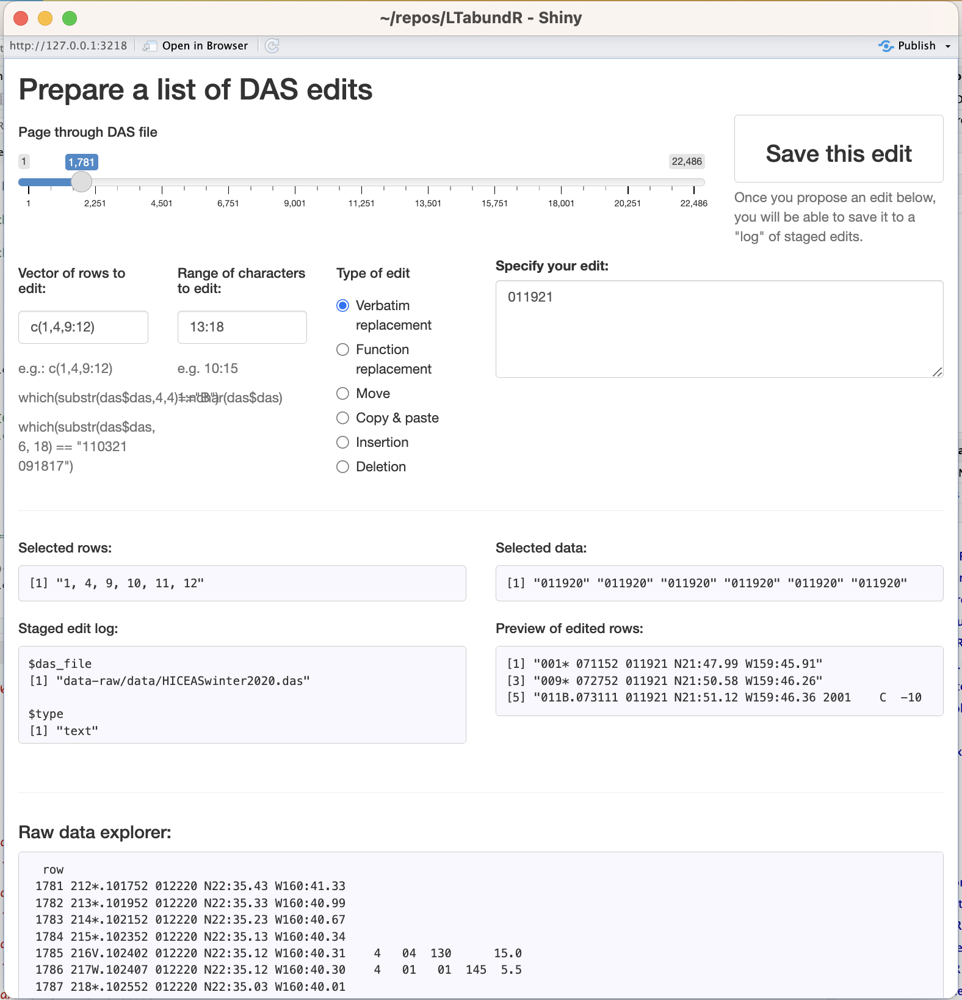
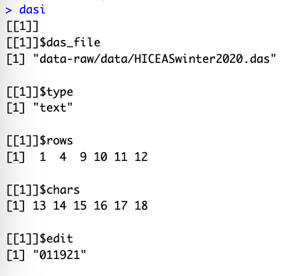

2 DAS editing
The LTabundR package includes several functions that facilitate the exploration of DAS files of WinCruz survey data, as well as a function that allows you to apply “edits” to the survey data in a reproducible way (i.e., using code, without modifying the actual data file).
Reviewing a DAS file
das_readtext()
The swfscDAS package has functions for reading in a DAS file and parsing it into columns of fixed-width text. To complement those functions, LTabundR includes the function das_readtext(), which reads in a DAS file without applying any column parsing, so that the data can be read in its true raw format.
# Local path to DAS file
das_file <- 'data/surveys/CenPac1986-2020_Final_alb.das'
das <- das_readtext(das_file)
das$das %>% head(20)
[1] " 1B 1805 073086 N31:57. W116:57. 989"
[2] " 1S 1805 073086 N31:57. W116:57. 01 004 6 4 300 1.77 1.5"
[3] " 2A 1805 073086 N31:57. W116:57. 01 15.0 N 099"
[4] " 1 004 0001 0001 0001 100 000 000 000"
[5] " 1S 0610 073186 N30:05. W116:04. 01 004 3 4 340 5.00 0.1"
[6] " 2A 0610 073186 N30:05. W116:04. 01 18.3 N 005"
[7] " 1 004 0150 0175 0125 100 000 000 000"
[8] " 3B.1311 073186 N29:46. W115:52. 989 N"
[9] " 4R.1311 073186 N29:46. W115:52. N"
[10] " 5P.1311 073186 N29:46. W115:52. 022 031 056"
[11] " 6V.1311 073186 N29:46. W115:52. 4 16.1"
[12] " 7N.1311 073186 N29:46. W115:52. 167 10.5"
[13] " 8W.1311 073186 N29:46. W115:52. 2"
[14] " 9V.1329 073186 N29:43. W115:51. 5 16.1"
[15] " 10P.1404 073186 N29:37. W115:50. 004 056 062"
[16] " 11V.1404 073186 N29:37. W115:50. 5 18.3"
[17] " 12S.1406 073186 N29:37. W115:50. 02 004 3 4 355 1.4 1.8"
[18] " 13A.1406 073186 N29:37. W115:50. 02 18.3 Y 005"
[19] " 1 022 0030 0100 0020 100 000 000 000"
[20] " 2 004 0250 0300 0200 100 000 000 000"To follow along, this data file can be downloaded here.
das_inspector()
We also provide a function, das_inspector(), that allows you to explore a DAS file within an interactive Shiny app. This app can also be used to find, prepare, and preview coded edits to the DAS data.
In this app, you specify the rows and ‘columns’ (i.e., character indices) that will be affected by your edit, the edit you want to apply, and the type of edit it will be (see next subsection).
A screenshot of the das_inspector() app:
.
Once you have an edit prepared and previewed within the app, you can then “save” that edit with the click of a button, and when you close the app your log of staged edits will be returned as a list.
The list produced from the edit staged in the screenshot above:
.
For this reason it can be useful to type the above command such that the output is saved into an object; in the example above we saved the output into an object named dasi.
You can then pass this list of edits to das_editor() (next subsection on this page), or as an argument within process_surveys() (next page). However, for the sake of full code reproducibility, it may be most useful to use this output to write code to stage this edit using the das_editor() function below.
Staging edits
The das_editor() function allows you to apply edits to a DAS file without modifiyng the original data. You supply edits to this function as a set of instructions saved within a list object. You can prepare these instructions manually or use the das_inspector() function above to get help. The das_editor() function then loops through each edit, applies them to a local version of the data, and returns that modified data to the user. This allows survey data to be modified reproducibly before being processed with LTabundR::process_surveys() without touching the original DAS data files or requiring analysts to duplicate files and make one-off modifications manually.
We expect it would be rare for a user to call das_editor() directly; instead, they would supply their edits as an argument in process_surveys(), and that function will call das_editor() internally to amend the survey data before it is processed (this is discussed on the next page).
Note that there is no limit to the number of edits that can be provided in a single list, and they can be provided in any order. The das_editor() function will sort the edits by DAS file and by edit type, and then apply edits in increasing order of “disruption”, i.e., text replacements first, then moving rows of data (no net change in number of rows), then copying-pasting, inserting, and deleting.
The das_editor() function can currently handle 6 types of edits, which we shall demonstrate below.
Types of editing
To demonstrate the types of editing actions that can be achieved through das_editor(), we will use the DAS file from the 2020 WHICEAS survey (you can download here).
# Local path to das_file
das_file <- "data/surveys/HICEASwinter2020.das"
das <- das_readtext(das_file)Verbatim text replacement
The edit will be interpreted verbatim as text that will replace the specified data.
edits <- list(list(das_file = das_file,
type = 'text',
rows = 10:15,
chars = 20:39,
edit = 'lat, lon'))Here is what this edit log object will look like:
edits
[[1]]
[[1]]$das_file
[1] "data/surveys/HICEASwinter2020.das"
[[1]]$type
[1] "text"
[[1]]$rows
[1] 10 11 12 13 14 15
[[1]]$chars
[1] 20 21 22 23 24 25 26 27 28 29 30 31 32 33 34 35 36 37 38 39
[[1]]$edit
[1] "lat, lon"And here is the effect it will have:
# Before
das$das[9:16]
[1] "009* 072752 011920 N21:50.58 W159:46.26"
[2] "010* 072952 011920 N21:50.91 W159:46.33"
[3] "011B.073111 011920 N21:51.12 W159:46.36 2001 C -10 N"
[4] "012R.073111 011920 N21:51.12 W159:46.36 F"
[5] "013P.073111 011920 N21:51.12 W159:46.36 126 307 238 "
[6] "014V.073111 011920 N21:51.12 W159:46.36 4 06 120 15.0"
[7] "015N.073111 011920 N21:51.12 W159:46.36 350 09.9"
[8] "016W.073111 011920 N21:51.12 W159:46.36 5 120 6.0"
# After
dase <- das_editor(edits)
Applying edits to DAS file: data/surveys/HICEASwinter2020.das
--- verbatim/function text replacements ...
--- --- working on edit 1 ...
dase$das[[1]]$das$das[9:16]
[1] "009* 072752 011920 N21:50.58 W159:46.26"
[2] "010* 072952 011920 lat, lon"
[3] "011B.073111 011920 lat, lon 2001 C -10 N"
[4] "012R.073111 011920 lat, lon F"
[5] "013P.073111 011920 lat, lon 126 307 238 "
[6] "014V.073111 011920 lat, lon 4 06 120 15.0"
[7] "015N.073111 011920 lat, lon 350 09.9"
[8] "016W.073111 011920 N21:51.12 W159:46.36 5 120 6.0"Function-based text replacement
The edit will be evaluated as a function that is applied to the specified characters in each of rows.
edits <- list(list(das_file = das_file,
type = 'function',
rows = 10:15,
chars = 20:39,
edit = 'tolower'))
# Before
das$das[9:16]
[1] "009* 072752 011920 N21:50.58 W159:46.26"
[2] "010* 072952 011920 N21:50.91 W159:46.33"
[3] "011B.073111 011920 N21:51.12 W159:46.36 2001 C -10 N"
[4] "012R.073111 011920 N21:51.12 W159:46.36 F"
[5] "013P.073111 011920 N21:51.12 W159:46.36 126 307 238 "
[6] "014V.073111 011920 N21:51.12 W159:46.36 4 06 120 15.0"
[7] "015N.073111 011920 N21:51.12 W159:46.36 350 09.9"
[8] "016W.073111 011920 N21:51.12 W159:46.36 5 120 6.0"
# After
dase <- das_editor(edits)
Applying edits to DAS file: data/surveys/HICEASwinter2020.das
--- verbatim/function text replacements ...
--- --- working on edit 1 ...
dase$das[[1]]$das$das[9:16]
[1] "009* 072752 011920 N21:50.58 W159:46.26"
[2] "010* 072952 011920 n21:50.91 w159:46.33"
[3] "011B.073111 011920 n21:51.12 w159:46.36 2001 C -10 N"
[4] "012R.073111 011920 n21:51.12 w159:46.36 F"
[5] "013P.073111 011920 n21:51.12 w159:46.36 126 307 238 "
[6] "014V.073111 011920 n21:51.12 w159:46.36 4 06 120 15.0"
[7] "015N.073111 011920 n21:51.12 w159:46.36 350 09.9"
[8] "016W.073111 011920 N21:51.12 W159:46.36 5 120 6.0"A special application of this form of editing is adjusting timestamps using the LTabundR function das_time(). In this next example, we subtract an hour from the first 5 rows of timestamps:
edits <- list(list(das_file = das_file,
type = 'function',
rows = 1:5,
chars = 6:40,
edit = 'function(x){das_time(x, tz_adjust = -1)$dt}'))
# Before
das$das[1:6]
[1] "001* 071152 011920 N21:47.99 W159:45.91"
[2] "002* 071352 011920 N21:48.31 W159:45.94"
[3] "003* 071552 011920 N21:48.63 W159:45.97"
[4] "004* 071752 011920 N21:48.95 W159:46.01"
[5] "005* 071952 011920 N21:49.28 W159:46.04"
[6] "006* 072152 011920 N21:49.60 W159:46.08"
# After
dase <- das_editor(edits)
Applying edits to DAS file: data/surveys/HICEASwinter2020.das
--- verbatim/function text replacements ...
--- --- working on edit 1 ...
dase$das[[1]]$das$das[1:6]
[1] "001* 061152 011920 N21:47.99 W159:45.91"
[2] "002* 061352 011920 N21:48.31 W159:45.94"
[3] "003* 061552 011920 N21:48.63 W159:45.97"
[4] "004* 061752 011920 N21:48.95 W159:46.01"
[5] "005* 061952 011920 N21:49.28 W159:46.04"
[6] "006* 072152 011920 N21:49.60 W159:46.08"In the event that a survey was conducted using UTC timestamps instead of local time, you can adjust each timestamp according to its actual timezone as determined from its corresponding lat/long coordinates. Let’s say the first 5 timestamps were collected in UTC by accident. The following code could correct that mistake:
edits <- list(list(das_file = das_file,
type = 'function',
rows = 1:5,
chars = 6:40,
edit = 'function(x){das_time(x, tz_adjust = "from utc")$dt}'))
# Before
das$das[1:6]
[1] "001* 071152 011920 N21:47.99 W159:45.91"
[2] "002* 071352 011920 N21:48.31 W159:45.94"
[3] "003* 071552 011920 N21:48.63 W159:45.97"
[4] "004* 071752 011920 N21:48.95 W159:46.01"
[5] "005* 071952 011920 N21:49.28 W159:46.04"
[6] "006* 072152 011920 N21:49.60 W159:46.08"
# After
dase <- das_editor(edits)
Applying edits to DAS file: data/surveys/HICEASwinter2020.das
--- verbatim/function text replacements ...
--- --- working on edit 1 ...
dase$das[[1]]$das$das[1:6]
[1] "001* 201152 011820 N21:47.99 W159:45.91"
[2] "002* 201352 011820 N21:48.31 W159:45.94"
[3] "003* 201552 011820 N21:48.63 W159:45.97"
[4] "004* 201752 011820 N21:48.95 W159:46.01"
[5] "005* 201952 011820 N21:49.28 W159:46.04"
[6] "006* 072152 011920 N21:49.60 W159:46.08"Moving data
The rows will be deleted from their current location and pasted immediately below the row number specified by edit. The moved rows will be given the same date, time, latitude, and longitude, as the edit row.
edits <- list(list(das_file = das_file,
type = 'move',
rows = 10,
chars = NULL,
edit = 15))
# Before
das$das[9:16]
[1] "009* 072752 011920 N21:50.58 W159:46.26"
[2] "010* 072952 011920 N21:50.91 W159:46.33"
[3] "011B.073111 011920 N21:51.12 W159:46.36 2001 C -10 N"
[4] "012R.073111 011920 N21:51.12 W159:46.36 F"
[5] "013P.073111 011920 N21:51.12 W159:46.36 126 307 238 "
[6] "014V.073111 011920 N21:51.12 W159:46.36 4 06 120 15.0"
[7] "015N.073111 011920 N21:51.12 W159:46.36 350 09.9"
[8] "016W.073111 011920 N21:51.12 W159:46.36 5 120 6.0"
# After
dase <- das_editor(edits)
Applying edits to DAS file: data/surveys/HICEASwinter2020.das
--- move, copy/paste, insertion, and deletion events ...
--- --- working on edit 1 ...
dase$das[[1]]$das$das[9:16]
[1] "009* 072752 011920 N21:50.58 W159:46.26"
[2] "011B.073111 011920 N21:51.12 W159:46.36 2001 C -10 N"
[3] "012R.073111 011920 N21:51.12 W159:46.36 F"
[4] "013P.073111 011920 N21:51.12 W159:46.36 126 307 238 "
[5] "014V.073111 011920 N21:51.12 W159:46.36 4 06 120 15.0"
[6] "015N.073111 011920 N21:51.12 W159:46.36 350 09.9"
[7] "010* 073111 011920 N21:51.12 W159:46.36"
[8] "016W.073111 011920 N21:51.12 W159:46.36 5 120 6.0"Copying & pasting data
The rows will be copied from their current location and pasted immediately below the row number specified by edit. The pasted rows will be given the same date, time, latitude, and longitude, as the edit row.
edits <- list(list(das_file = das_file,
type = 'copy',
rows = 10,
edit = 15))
# Before
das$das[9:17]
[1] "009* 072752 011920 N21:50.58 W159:46.26"
[2] "010* 072952 011920 N21:50.91 W159:46.33"
[3] "011B.073111 011920 N21:51.12 W159:46.36 2001 C -10 N"
[4] "012R.073111 011920 N21:51.12 W159:46.36 F"
[5] "013P.073111 011920 N21:51.12 W159:46.36 126 307 238 "
[6] "014V.073111 011920 N21:51.12 W159:46.36 4 06 120 15.0"
[7] "015N.073111 011920 N21:51.12 W159:46.36 350 09.9"
[8] "016W.073111 011920 N21:51.12 W159:46.36 5 120 6.0"
[9] "017*.073152 011920 N21:51.24 W159:46.39"
# After
dase <- das_editor(edits)
Applying edits to DAS file: data/surveys/HICEASwinter2020.das
--- move, copy/paste, insertion, and deletion events ...
--- --- working on edit 1 ...
dase$das[[1]]$das$das[9:17]
[1] "009* 072752 011920 N21:50.58 W159:46.26"
[2] "010* 072952 011920 N21:50.91 W159:46.33"
[3] "011B.073111 011920 N21:51.12 W159:46.36 2001 C -10 N"
[4] "012R.073111 011920 N21:51.12 W159:46.36 F"
[5] "013P.073111 011920 N21:51.12 W159:46.36 126 307 238 "
[6] "014V.073111 011920 N21:51.12 W159:46.36 4 06 120 15.0"
[7] "015N.073111 011920 N21:51.12 W159:46.36 350 09.9"
[8] "010* 073111 011920 N21:51.12 W159:46.36"
[9] "016W.073111 011920 N21:51.12 W159:46.36 5 120 6.0"Inserting data
The text provided in edit will be inserted verbatim immediately below the first of the rows provided.
edits <- list(list(das_file = das_file,
type = 'insert',
rows = 10,
edit = "SEQ* HHMMSS MMDDYY NDG:MI.NT WDEG:MI.NT"))
# Before
das$das[9:16]
[1] "009* 072752 011920 N21:50.58 W159:46.26"
[2] "010* 072952 011920 N21:50.91 W159:46.33"
[3] "011B.073111 011920 N21:51.12 W159:46.36 2001 C -10 N"
[4] "012R.073111 011920 N21:51.12 W159:46.36 F"
[5] "013P.073111 011920 N21:51.12 W159:46.36 126 307 238 "
[6] "014V.073111 011920 N21:51.12 W159:46.36 4 06 120 15.0"
[7] "015N.073111 011920 N21:51.12 W159:46.36 350 09.9"
[8] "016W.073111 011920 N21:51.12 W159:46.36 5 120 6.0"
# After
dase <- das_editor(edits)
Applying edits to DAS file: data/surveys/HICEASwinter2020.das
--- move, copy/paste, insertion, and deletion events ...
--- --- working on edit 1 ...
dase$das[[1]]$das$das[9:16]
[1] "009* 072752 011920 N21:50.58 W159:46.26"
[2] "010* 072952 011920 N21:50.91 W159:46.33"
[3] "SEQ* HHMMSS MMDDYY NDG:MI.NT WDEG:MI.NT"
[4] "011B.073111 011920 N21:51.12 W159:46.36 2001 C -10 N"
[5] "012R.073111 011920 N21:51.12 W159:46.36 F"
[6] "013P.073111 011920 N21:51.12 W159:46.36 126 307 238 "
[7] "014V.073111 011920 N21:51.12 W159:46.36 4 06 120 15.0"
[8] "015N.073111 011920 N21:51.12 W159:46.36 350 09.9" Deleting data
The specified rows will be deleted.
edits <- list(list(das_file = das_file,
type = 'delete',
rows = 10))
# Before
das$das[9:16]
[1] "009* 072752 011920 N21:50.58 W159:46.26"
[2] "010* 072952 011920 N21:50.91 W159:46.33"
[3] "011B.073111 011920 N21:51.12 W159:46.36 2001 C -10 N"
[4] "012R.073111 011920 N21:51.12 W159:46.36 F"
[5] "013P.073111 011920 N21:51.12 W159:46.36 126 307 238 "
[6] "014V.073111 011920 N21:51.12 W159:46.36 4 06 120 15.0"
[7] "015N.073111 011920 N21:51.12 W159:46.36 350 09.9"
[8] "016W.073111 011920 N21:51.12 W159:46.36 5 120 6.0"
# After
dase <- das_editor(edits)
Applying edits to DAS file: data/surveys/HICEASwinter2020.das
--- move, copy/paste, insertion, and deletion events ...
--- --- working on edit 1 ...
dase$das[[1]]$das$das[9:16]
[1] "009* 072752 011920 N21:50.58 W159:46.26"
[2] "011B.073111 011920 N21:51.12 W159:46.36 2001 C -10 N"
[3] "012R.073111 011920 N21:51.12 W159:46.36 F"
[4] "013P.073111 011920 N21:51.12 W159:46.36 126 307 238 "
[5] "014V.073111 011920 N21:51.12 W159:46.36 4 06 120 15.0"
[6] "015N.073111 011920 N21:51.12 W159:46.36 350 09.9"
[7] "016W.073111 011920 N21:51.12 W159:46.36 5 120 6.0"
[8] "017*.073152 011920 N21:51.24 W159:46.39" Actual edits
The above examples were silly demonstrations of the types of edits that can be handled by das_editor(). Here we show the preparation of four edits that we will actually use when we process surveys on the next page.
These edits will be applied to the following DAS file of survey data from 1986-2020:
# Local path to das_file
das_file <- 'data/surveys/CenPac1986-2020_Final_alb.das'
das <- das_readtext(das_file)Cruise 1607 sighting 55
This sighting, at sequence ID 032 below, currently triggers errors in swfscDAS due to a manually entered R event a few lines above that does not have the P (observer positions) event that typically follows it. Without tht P entry, the observer positions of the sighting are unknown.
das[128111:128125,]
[1] "022P 120643 041597 N37:00.08 W151:55.47 143 091 005"
[2] "023C 120643 041597 N37:00.08 W151:55.47 both right and left on 7x and naked eye"
[3] "024N 120643 041597 N37:00.08 W151:55.47 075 08.0"
[4] "025W 120643 041597 N37:00.08 W151:55.47 1 310 6.0"
[5] "026C 120916 041597 N37:00.33 W151:55.18 both right and left on 7x and naked eye"
[6] "027* 121120 041597 N37:00.45 W151:54.85"
[7] "028C 121933 041597 N37:00.75 W151:53.50 both right and left back on 25x"
[8] " R.121933 041597 N37:00.75 W151:53.50 S"
[9] "029*.122120 041597 N37:00.81 W151:53.22"
[10] "030V.122120 041597 N37:00.81 W151:53.22 4 07 320 21.0"
[11] "031C.122946 041597 N37:01.12 W151:51.77 wind speed appears lower than bridge speed, 10-15"
[12] "032S.123023 041597 N37:01.14 W151:51.70 055 005 3 4 058 4.0 0.8"
[13] "033A.123023 041597 N37:01.14 W151:51.70 055 N N 022"
[14] " 1 005 0002 0002 0002 100"
[15] "034C.123120 041597 N37:01.17 W151:51.51 remained on effort after sighting" (Note that we used das_inspector() to get the row numbers for this region of the data.)
To fix this, we can stage an edit that copies the P line that occurs minutes earlier and pastes that line just below the rogue R line.
edit_1607_55 <-
list(das_file = das_file,
type = 'copy',
rows = 128111,
chars = NULL,
edit = 128118)Here is what this change will look like:
dase <- das_editor(list(edit_1607_55))
Applying edits to DAS file: data/surveys/CenPac1986-2020_Final_alb.das
--- move, copy/paste, insertion, and deletion events ...
--- --- working on edit 1 ...
dase$das[[1]]$das$das[128111:128123]
[1] "022P 120643 041597 N37:00.08 W151:55.47 143 091 005"
[2] "023C 120643 041597 N37:00.08 W151:55.47 both right and left on 7x and naked eye"
[3] "024N 120643 041597 N37:00.08 W151:55.47 075 08.0"
[4] "025W 120643 041597 N37:00.08 W151:55.47 1 310 6.0"
[5] "026C 120916 041597 N37:00.33 W151:55.18 both right and left on 7x and naked eye"
[6] "027* 121120 041597 N37:00.45 W151:54.85"
[7] "028C 121933 041597 N37:00.75 W151:53.50 both right and left back on 25x"
[8] " R.121933 041597 N37:00.75 W151:53.50 S"
[9] "022P 121933 041597 N37:00.75 W151:53.50 143 091 005"
[10] "029*.122120 041597 N37:00.81 W151:53.22"
[11] "030V.122120 041597 N37:00.81 W151:53.22 4 07 320 21.0"
[12] "031C.122946 041597 N37:01.12 W151:51.77 wind speed appears lower than bridge speed, 10-15"
[13] "032S.123023 041597 N37:01.14 W151:51.70 055 005 3 4 058 4.0 0.8" Cruise 1607 sighting 68
This sighting faces a similar issue: a rogue R event without the follow-up P event. This case is also missing the follow-up V event (viewing conditions).
das[129980:129993,]
[1] "012* 065738 042797 N31:03.98 W136:03.60"
[2] "013C 065944 042797 N31:04.25 W136:03.55 Both observers on 7X since going ON EFFORT this morning. JP."
[3] "014P 070118 042797 N31:04.43 W136:03.51 091 005 148"
[4] "015V 070118 042797 N31:04.43 W136:03.51 5 06 320 20.0"
[5] "016N 070118 042797 N31:04.43 W136:03.51 010 08.0"
[6] "017W 070118 042797 N31:04.43 W136:03.51 1 02 03 035 6.0"
[7] "018C 070257 042797 N31:04.65 W136:03.47 This rotation is now on the 25X"
[8] " R.070257 042797 N31:04.65 W136:03.47 S"
[9] "019*.070738 042797 N31:05.25 W136:03.36"
[10] "020S.071601 042797 N31:06.34 W136:03.16 068 148 3 4 028 1.8 1.5"
[11] "021A.071601 042797 N31:06.34 W136:03.16 068 N N 037"
[12] " 1 091 0009 0011 0008 100"
[13] " 2 005 0014 0015 0012 100"
[14] " 3 148 0018 0023 0015 100" To fix this we will stage a similar edit, this time copying and pasting two rows (P and V events) below the rogue R event:
edit_1607_68 <-
list(das_file = das_file,
type = 'copy',
rows = c(129982, 129983 , 129985),
chars = NULL,
edit = 129987)Preview of change:
dase <- das_editor(list(edit_1607_68))
Applying edits to DAS file: data/surveys/CenPac1986-2020_Final_alb.das
--- move, copy/paste, insertion, and deletion events ...
--- --- working on edit 1 ...
dase$das[[1]]$das$das[129982:129995]
[1] "014P 070118 042797 N31:04.43 W136:03.51 091 005 148"
[2] "015V 070118 042797 N31:04.43 W136:03.51 5 06 320 20.0"
[3] "016N 070118 042797 N31:04.43 W136:03.51 010 08.0"
[4] "017W 070118 042797 N31:04.43 W136:03.51 1 02 03 035 6.0"
[5] "018C 070257 042797 N31:04.65 W136:03.47 This rotation is now on the 25X"
[6] " R.070257 042797 N31:04.65 W136:03.47 S"
[7] "014P 070257 042797 N31:04.65 W136:03.47 091 005 148"
[8] "015V 070257 042797 N31:04.65 W136:03.47 5 06 320 20.0"
[9] "017W 070257 042797 N31:04.65 W136:03.47 1 02 03 035 6.0"
[10] "019*.070738 042797 N31:05.25 W136:03.36"
[11] "020S.071601 042797 N31:06.34 W136:03.16 068 148 3 4 028 1.8 1.5"
[12] "021A.071601 042797 N31:06.34 W136:03.16 068 N N 037"
[13] " 1 091 0009 0011 0008 100"
[14] " 2 005 0014 0015 0012 100" Cruise 1621 sighting 245
This is another case of a rogue R event, again missing both the requisite P and the V post-R events.
das[271930:271939,]
[1] "036E 085345 103002 N20:22.56 W160:02.21 U"
[2] "037R.085346 103002 N20:22.56 W160:02.21 S"
[3] "038P.085346 103002 N20:22.56 W160:02.21 126 224 200"
[4] "039V.085346 103002 N20:22.56 W160:02.21 5 07 000 21.0"
[5] "040N.085346 103002 N20:22.56 W160:02.21 285 09.7"
[6] "041W.085346 103002 N20:22.56 W160:02.21 1 06 02 045 6.0"
[7] "042E 085352 103002 N20:22.56 W160:02.22 U"
[8] "043R.085354 103002 N20:22.57 W160:02.23 S"
[9] "048S.085359 103002 N20:22.57 W160:02.24 245 200 3 4 057 11.0 0.35 270 2.0"
[10] "049A.085359 103002 N20:22.57 W160:02.24 245 N N 015" Staged edit:
edit_1621_245 <-
list(das_file = das_file,
type = 'copy',
rows = 271932:271933,
chars = NULL,
edit = 271937)Preview of change:
dase <- das_editor(list(edit_1621_245))
Applying edits to DAS file: data/surveys/CenPac1986-2020_Final_alb.das
--- move, copy/paste, insertion, and deletion events ...
--- --- working on edit 1 ...
dase$das[[1]]$das$das[271930:271941]
[1] "036E 085345 103002 N20:22.56 W160:02.21 U"
[2] "037R.085346 103002 N20:22.56 W160:02.21 S"
[3] "038P.085346 103002 N20:22.56 W160:02.21 126 224 200"
[4] "039V.085346 103002 N20:22.56 W160:02.21 5 07 000 21.0"
[5] "040N.085346 103002 N20:22.56 W160:02.21 285 09.7"
[6] "041W.085346 103002 N20:22.56 W160:02.21 1 06 02 045 6.0"
[7] "042E 085352 103002 N20:22.56 W160:02.22 U"
[8] "043R.085354 103002 N20:22.57 W160:02.23 S"
[9] "038P.085354 103002 N20:22.57 W160:02.23 126 224 200"
[10] "039V.085354 103002 N20:22.57 W160:02.23 5 07 000 21.0"
[11] "048S.085359 103002 N20:22.57 W160:02.24 245 200 3 4 057 11.0 0.35 270 2.0"
[12] "049A.085359 103002 N20:22.57 W160:02.24 245 N N 015" Timestamp issues with Cruise 1004
This edit will correct for the fact that all of Cruise 1004 was conducted using UTC timestamps instead of local timestamps.
edit_1004_utc <-
list(das_file = das_file,
type = 'function',
rows = 433327:437665,
chars = 6:39,
edit = 'function(x){das_time(x, tz_adjust = "from utc")$dt}')# Before
das$das[433326:433330] # beginning of cruise
[1] "229* 181728 020510 N13:14.49 E145:00.34"
[2] "001* 201109 041910 N13:35.01 E145:59.35"
[3] "002* 201309 041910 N13:35.03 E145:59.42"
[4] "003* 201509 041910 N13:35.08 E145:59.54"
[5] "004* 201709 041910 N13:35.13 E145:59.70"
das$das[437664:437667] # end of cruise
[1] "431* 044625 050410 N21:15.78 W158:53.32"
[2] "432* 044825 050410 N21:16.05 W158:53.31"
[3] "001* 144327 080410 N32:39.39 W117:13.60"
[4] "002* 144827 080410 N32:38.58 W117:13.49"# After
dase$das[[1]]$das$das[433326:433330]
[1] "229* 181728 020510 N13:14.49 E145:00.34"
[2] "001* 061109 042010 N13:35.01 E145:59.35"
[3] "002* 061309 042010 N13:35.03 E145:59.42"
[4] "003* 061509 042010 N13:35.08 E145:59.54"
[5] "004* 061709 042010 N13:35.13 E145:59.70"
dase$das[[1]]$das$das[437664:437667]
[1] "431* 184625 050310 N21:15.78 W158:53.32"
[2] "432* 184825 050310 N21:16.05 W158:53.31"
[3] "001* 074327 080410 N32:39.39 W117:13.60"
[4] "002* 144827 080410 N32:38.58 W117:13.49"Note that this type of edit can be dangerous, however, since ships can cross time zone boundaries mid-day, potentially repeating timestamps and giving the appearance that the DAS data is out of chronological order, which may bring about consequences for data processing that are difficult to predict.
This type of edit is also time-consuming; since the time zone needs to be calculated in each DAS row individually, this edit could take >20 minutes to process. An expedited (and safer) approximation of this edit would be to simply adjust the timezone by the GMT offset for Guam (UTC + 10 hours).
edit_1004_gmt10 <-
list(das_file = das_file,
type = 'function',
rows = 433327:437665,
chars = 6:39,
edit = 'function(x){das_time(x, tz_adjust = 10)$dt}')
dase <- das_editor(list(edit_1004_gmt10))
Applying edits to DAS file: data/surveys/CenPac1986-2020_Final_alb.das
--- verbatim/function text replacements ...
--- --- working on edit 1 ...
dase$das[[1]]$das$das[433326:433330]
[1] "229* 181728 020510 N13:14.49 E145:00.34"
[2] "001* 061109 042010 N13:35.01 E145:59.35"
[3] "002* 061309 042010 N13:35.03 E145:59.42"
[4] "003* 061509 042010 N13:35.08 E145:59.54"
[5] "004* 061709 042010 N13:35.13 E145:59.70"
dase$das[[1]]$das$das[437664:437667]
[1] "431* 144625 050410 N21:15.78 W158:53.32"
[2] "432* 144825 050410 N21:16.05 W158:53.31"
[3] "001* 144327 080410 N32:39.39 W117:13.60"
[4] "002* 144827 080410 N32:38.58 W117:13.49"